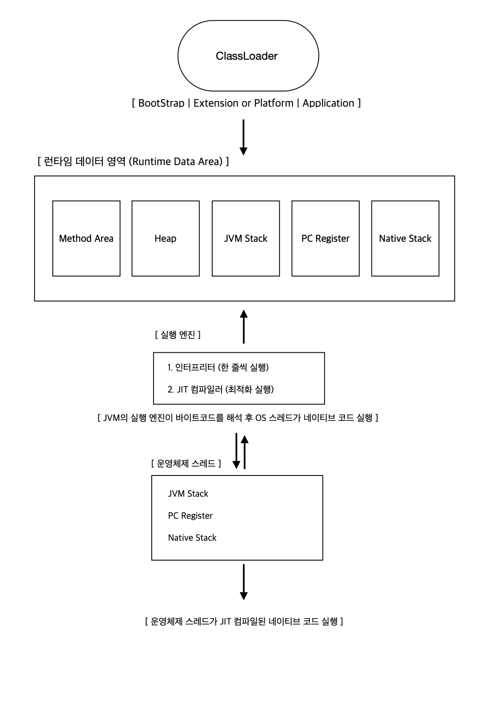

JVM 동작 방식과 구성 요소 정리
Java 프로그램은 .java 소스 코드에서 시작해 .class 바이트코드로 변환되고,
이를 실행하는 주체가 바로 JVM(Java Virtual Machine) 입니다.
이번 글에서는 JVM의 구성 요소와 클래스 로딩 과정, 그리고 메모리 동작 방식을 정리해보겠습니다.
1. JVM의 주요 구성 요소

그림 1: JVM 전체 아키텍처
- ClassLoader: 클래스를 로드하는 역할
- Runtime Data Area: 실행 중 데이터를 저장하는 영역
- Execution Engine: 바이트코드를 해석하거나 컴파일해 실제 기계어로 실행
- Java Native Interface (JNI): 네이티브 라이브러리(C/C++ 등)와 상호작용하는 인터페이스
2. Runtime Data Area
JVM이 실행될 때 만들어지는 메모리 구조는 공유 영역과 비공유 영역으로 나눌 수 있습니다.
(쓰레드 간 공유 영역)
- Method Area: 클래스의 메타데이터, static 변수, 상수 풀 저장
- (Java 8 이후 HotSpot JVM에서는 Metaspace로 구현됨)
- Heap: new 키워드로 생성되는 객체 인스턴스 저장
(쓰레드 간 공유되지 않는 영역)
- JVM Stack: 각 메서드 호출마다 스택 프레임 생성 (지역 변수, 피연산자 스택, 리턴 주소 등 포함)
- PC Register: 현재 실행 중인 명령어의 메모리 주소 저장
- Native Stack: 네이티브 코드 실행을 위한 공간
3. Execution Engine
- Interpreter: 바이트코드를 한 줄씩 해석해 실행
- JIT(Just-In-Time) Compiler: 자주 실행되는 바이트코드를 기계어로 변환하여 성능 향상
4. 클래스 로딩 과정
클래스 로딩은 다음과 같은 3단계로 진행됩니다.
1️⃣ 로딩 (Loading)
.class파일을 메모리에 로드- 상수 풀에서 기본 타입 리터럴 및 메서드 이름 등의 심볼 정보 저장
2️⃣ 링킹 (Linking)
- 검증(Verification): 바이트코드의 유효성 검사
- 준비(Preparation):
static변수를 기본값으로 초기화 - 해석(Resolution) - 중요!
- 클래스가 처음 메서드 영역(Method Area)에 로드될 때, 심볼 정보(symbolic references)는 메모리 영역에 임의의 값으로 저장됨
- 이 심볼릭 레퍼런스를 실제 메모리 주소로 변환하는 과정이 해석(Resolution)
- JVM은 런타임에 동적 연결을 수행하여, 특정 클래스, 필드, 메서드 참조를 실제 메모리 주소로 바꿈
- 특히 인터페이스 메서드 호출 시, 런타임에 동적 바인딩이 이루어짐
- 예를 들어,
Method Area에 로드될 때java.lang.String의hashCode()를 호출하면, 처음에는 심볼릭 참조(문자열 형태)였지만, 해석 후 실제 주소를 가리킴
3️⃣ 초기화 (Initialization)
static변수에 실제 값을 할당static블록 및 메서드 실행
5. ClassLoader란?
- Bootstrap ClassLoader: 기본 Java API 클래스 로드
- Extension (Platform) ClassLoader:
lib/ext에 있는 확장 API 로드 - Application (System) ClassLoader: 사용자 정의 클래스를 로드
✔ 부모 위임 모델(Parent Delegation Model) - 중요!
- 클래스를 로드할 때, 최상위 Bootstrap ClassLoader부터 확인 후, 없으면 자식 ClassLoader가 로드
- 즉, Application → Extension → Bootstrap 순서로 부모에게 요청하며, 부모가 처리하지 못하면 자식이 직접 로드
- 이 방식의 장점
- 보안 강화: JDK 핵심 라이브러리(java.lang.String 등)의 재정의를 방지
- 일관성 유지: 동일한 클래스를 여러 번 로드하지 않음
- 영향이 있을까?
- 보안 취약점: 만약 부모 위임을 깨고 Custom ClassLoader가 핵심 클래스를 재정의하면 보안 이슈 발생 가능
- ClassLoader Leak 문제: 부모 위임 구조를 잘못 사용하면 GC에서 해제되지 않는 클래스가 남아 메모리 누수 발생 가능
- JVM 튜닝 가능성: 일부 경우 성능 최적화를 위해 사용자 정의 ClassLoader를 사용하기도 함
6. 클래스 로딩 및 메모리 동작 예제
class A {
private static final String STR = "ABC"; // "ABC"가 **상수 풀(Method Area)** 에 저장됨
private static Long l = Long.valueOf(-1L); // Heap에 저장됨
private static int i = -1; // Method Area (static 변수 영역)에 저장됨
private static C c = new C(); // Heap에 저장됨
private final String a = "ABC";
private final int ii = 1;
private C cc = new C();
public static void main(String[] args) {
A a = new A(); // Heap에 객체 생성 (a, ii, cc 포함)
B b = new B(); // Heap에 객체 생성 (B가 A를 상속하여 포함)
}
}
class B extends A {
public static void main(String[] args) {
// 실행 코드
}
}
✔ 클래스 로딩 과정에서 발생하는 메모리 변화:
- 클래스로더가
A.class를 메서드 영역(Method Area)에 로드 static final상수("ABC")는 상수 풀(Constant Pool)에 저장static변수(l,i,c)는 Method Area에 저장new A()를 호출하면 Heap에 객체가 생성됨- A가 B로 확장되면, B도 Heap에 저장되며, A의 데이터도 포함됨
정리
✔ JVM은 ClassLoader, Runtime Data Area, Execution Engine, JNI로 구성됨
✔ Runtime Data Area는 공유 영역(Heap, Method Area)과 비공유 영역(Stack, PC Register, Native Stack)으로 나뉨
✔ 클래스 로딩 과정: 로딩 → 링킹 → 초기화 순서로 진행
✔ 링킹(해석) 과정에서 심볼릭 레퍼런스를 실제 주소로 변환
✔ 클래스 로더는 부모 위임 모델을 사용하여 보안 및 성능을 최적화
✔ 잘못된 ClassLoader 사용 시 메모리 누수 또는 보안 취약점이 발생할 수 있음
댓글